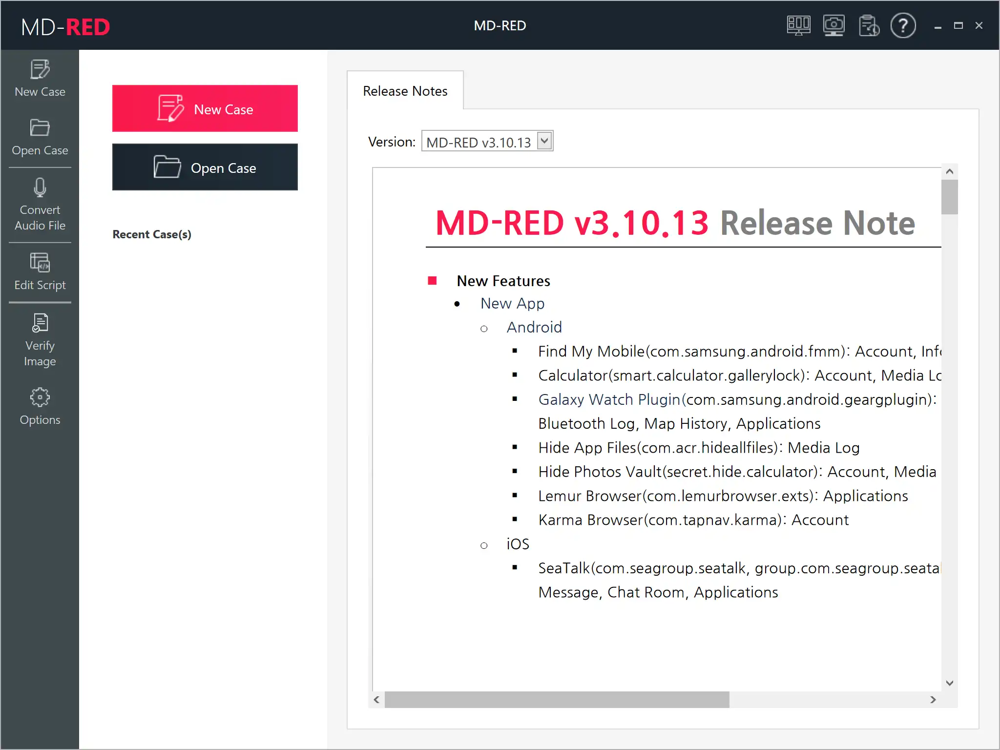

请访问原文链接：MD-RED 3.10 (Windows) - 移动取证数据分析 查看最新版。原创作品，转载请保留出处。
作者主页：sysin.org
MD-RED - 移动取证软件
移动取证软件，用于从移动和数字设备恢复、解码、解密、可视化和报告证据数据
MD-RED 是一款取证软件，用于恢复、解密、可视化、分析数据挖掘以及报告通过 MD-NEXT 或其他工具提取的证据数据。所有分析结果都可以作为犯罪和事故调查的法医报告导出 (sysin)。此外，最新移动应用程序的分析模块通过不断研究而快速更新。

产品亮点
System Requirements
- OS: Windows 7/8/10 (x64)
- CPU: i7 or faster
- RAM: 8GB or above
- Storage: 1TB or above
- Display: 1024x768 or higher
- USB: 1 or more USB 2.0 ports
- Microsoft.Net Framework 4.6.2


主要功能
支持多种手机厂商和移动操作系统
- 支持功能手机、智能手机及多种数码设备
- 支持 iOS、Android、Windows、Tizen 等移动操作系统
各种文件系统的分析与恢复
- FAT12/16/32、exFAT、NTFS、ext3/4、HFS+、EFS、YAFFS、FSR、XSR、F2FS、VDFS、XFS、DVR 文件系统（例如大华和海康威视）、黑盒文件系统（TAT）
- 分析未分配区域的已删除数据
分析移动数据和 2,000 多个应用程序，包括最新的移动应用程序
- 手机摄像头拍摄的多媒体文件
- 通话记录、地址簿、短信 / 彩信、电子邮件、备忘录、互联网历史记录
- 社交媒体、地图、导航、健康、银行和生活方式应用程序
- 反取证应用程序 (sysin)
最大化分析性能
- 通过多核进程并行分析
加密数据的解密
- 解密加密的聊天消息、电子邮件、文件和应用程序数据
主要通讯应用程序的深入分析
- 数据解码和恢复
- WhatsApp - 多个备份文件的解密
- 微信 - 多账户分析、彩虹表 (sysin)
- Skype、Facebook Messenger、Telegram、Wickr
- QQ、Kakaotalk、Line、Zalo、Viber、Snapchat 和许多其他通讯工具
解码锁定屏幕和密码信息
- 解码解锁图案、PIN 码和密码
- 通过 GPU 进行数据分析
- iPhone 钥匙串分析
多媒体数据恢复与分析
- 恢复已删除 / 损坏的视频文件的帧
- 使用 RDS（参考数据集）排除预先注册的图像（900,000+）
- 提供音频文件转换器（从 AMR/AUD/QCP/SILK 到 MP3/AMR/WAV）
- 支持播放 QCP 文件和 Silk 编解码器音频
新数字设备分析
- 无人机数据分析 - 飞行历史、多媒体数据、支持制造商 DJI/Parrot/PixHawk
- 物联网数据分析 - AI 音箱、智能电视、汽车导航
日志分析
- 媒体日志、搜索词日志
- 系统日志、网络日志（蓝牙、WiFi、基站）
社会关系分析
- 支持多手机分析
- 通话记录、信使、电子邮件数据分析
- 联系人合并和拆分 (sysin)
- 按应用程序、时期、联系人、通信类型过滤
- 通过多种技术进行社区分析
嵌入式数据查看器
- SQLite 数据库查看器
- 十六进制查看器
- PList 查看器
- 文档查看器（文本、XML、PDF、MS Office、ZIP 文件、可执行文件、加密文件）
- 照片库
- 视频播放器
- 音频播放器
分析数据的可视化
- GPS 数据和手机信号塔位置
- 离线 / 在线地图（地区 / 国家 / 城市 - 3 级）
- 时间线查看器
- 用于社交关系可视化的链接查看器
- 用于通信可视化的聊天查看器
- 用于互联网历史回顾的网络浏览器
高级数据过滤选项
- 各种过滤器，包括文件系统、签名、时间
- 排列、分组
- 正则表达式搜索
- 关键字注册
- 分析结果书签
- 分析结果删除工具
用于用户定义分析的 Python 脚本 IDE
- 适合高级用户的 Python 脚本编辑器
- 代码生成、代码执行和调试
案例管理和哈希值验证
- 案例管理
- 对提取的图像进行分组
- 每个提取图像的哈希值验证
- MD-NEXT 采集工具互通
报告功能
- 选定文件的哈希计算
- 提取分析多媒体
- 支持 PDF、Excel、HTML、XML 和 SQLite DB 等多种报告格式
- 支持 NUIX 和 Relativity 等第 3 方报告格式
下载地址
MD-RED v3.10.13.2287 for Windows
百度网盘链接：https://pan.baidu.com/s/1a5S6wlCQi_EPmXNOhIl02Q?pwd= <专享>
文件大小：约 1.5GB
已验证可用性，包含简单安装步骤。

相关产品：
- MD-NEXT 2.0 (Windows) - 移动取证软件
- MD-RED 3.10 (Windows) - 移动取证数据分析
- MD-LIVE 3.4 (Windows) - 移动取证实时提取和分析
- MD-CLOUD 1.8 (Windows) - 用于提取和分析云账户的数字取证软件
更多：HTTP 协议与安全

文章用于推荐和分享优秀的软件产品及其相关技术，所有软件默认提供官方原版（免费版或试用版），免费分享。对于部分产品笔者加入了自己的理解和分析，方便学习和研究使用。任何内容若侵犯了您的版权，请联系作者删除。如果您喜欢这篇文章或者觉得它对您有所帮助，或者发现有不当之处，欢迎您发表评论，也欢迎您分享这个网站，或者赞赏一下作者，谢谢！
 支付宝赞赏
支付宝赞赏  微信赞赏
微信赞赏赞赏一下
敬请注册！点击 “登录” - “用户注册”（已知不支持 21.cn/189.cn 邮箱）。 请勿使用联合登录（已关闭）。